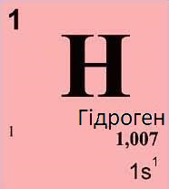
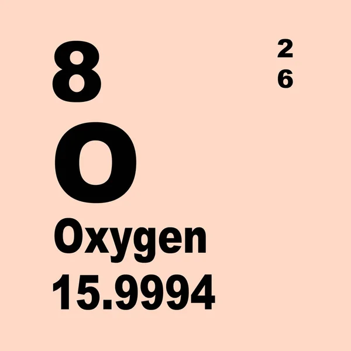
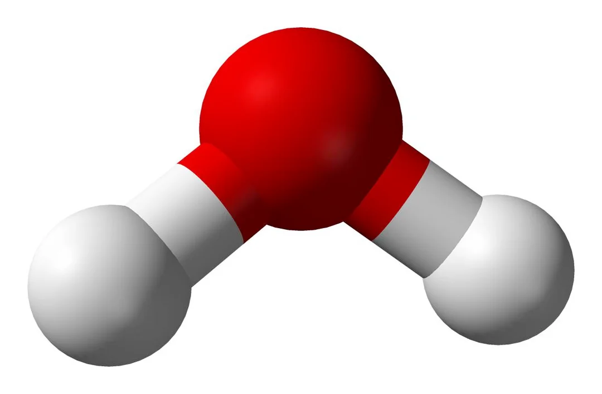
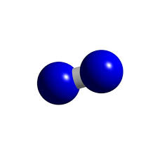
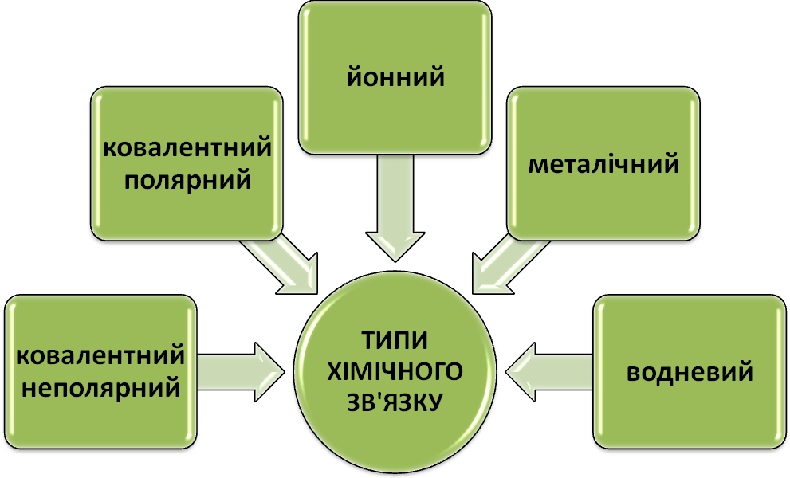
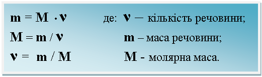

— вид матерії, яка на відміну від поля, характеризується масою та складається з елементарних частинок
(електронів, протонів, нейтронів, мезонів тощо). Характерною властивістю таких частинок є відмінні від нуля баріонний заряд або лептонний заряд.
Терміном хімічна речовина позначають головним чином матерію речовину організовану в атоми, молекули тощо.
Вся різноманітність фізичних та хімічних властивостей речовин зумовлюється взаємодією між електронами та атомними ядрами,
а також між атомами, молекулами, йонами. Хімічні речовини, що складаються з атомів одного виду, є простими, з атомів різних видів — складними.
Складні хімічні речовини розділяються на органічні і неорганічні.
+
=

Молекула
— здатна до самостійного існування найменша частинка простої або складної речовини,
що має її основні хімічні властивості, які визначаються її складом та будовою. Молекула складається з атомів,
а якщо точніше, то з атомних ядер, оточених певним числом внутрішніх електронів,
та зовнішніх валентних електронів, які утворюють хімічні зв'язки. Внутрішні електрони атомів, зазвичай,
не беруть участі в утворенні хімічних зв'язків. Склад та будова молекул речовини не залежать від способу її отримання.
У випадку одноатомних молекул (наприклад, інертних газів) поняття молекули й атома збігаються.

Прості речовини
— речовини молекули яких складаються з атомів одного і того самого хімічного елемента.
Наприклад, до простих речовин належать водень, азот, хлор та інші, бо молекули водню H2 складаються тільки з атомів водню (гідрогену),
молекули азоту N2 — тільки з атомів азоту (нітрогену), молекули хлору Cl2 — тільки з атомів хлору.
Молекули деяких простих речовин складаються тільки з одного атома. Наприклад, молекули гелію і аргону складаються з одного атома гелію
— He та аргону — Ar. Молекули всіх інших інертних газів теж складаються з одного атома.
Складна речовина
— є речовиною, молекули якої складаються з атомів двох або більше хімічних елементів
сполучених між собою тим чи іншим типом хімічного зв'язку, на відміну від простих речовин.
Зазвичай це молекула, яка може визначатися певною хімічною формулою. Складних речовин незрівнянно більше, ніж простих.
Якщо простих речовин тепер відомо понад 400, то складних речовин в неорганічній хімії — понад 50 тис., а в органічній хімії — близько 3 млн.

Хімічний зв'язок
— це взаємодія між атомами, яка утримує їх у молекулі чи твердому тілі.
Хімічний зв'язок є результатом складної взаємодії електронів та ядер атомів і описуються квантовою механікою.

Кількість речовини
— фізична величина, що характеризує кількість однотипних структурних одиниць (часток).
Під структурними одиницями розуміються будь-які частки, з яких складається речовина (атоми, молекули, іони, електрони або будь-які інші частки).
В міжнародній системі одиниць SI кількість речовини поряд з масою (яка теж фактично корелює з кількістю частинок)
належить до основних одиниць окремого типу. Таким чином, кількість речовини в системі SI не може бути виражена через інші базові одиниці.
Одиниця кількості речовини називається моль. Моль дорівнює кількості речовини системи,
яка містить стільки ж частинок, скільки міститься атомів у 0,012 кг вуглецю-12.
Хімічні властивості
— властивості речовин, що стосуються хімічних процесів, тобто це такі властивості, які проявляються в ході хімічної реакції.
До хімічних властивостей відноситься здатність реагувати з іншими речовинами, а також схильність до розкладу.
Хімічні властивості речовини залежать не лише від кількісного та якісного складу,
тобто з яких і скількох атомів хімічних елементів вона складається, але й від хімічної структури молекул речовини (структура ізомерія)
та від просторової конфігурації молекул (конформація та стереоізомерія).
Хімічна реакція, або хімічне перетворення
— це перетворення речовин,
при якому молекули одних речовин руйнуються і на їхньому місці утворюються молекули інших речовин з іншим атомним складом.
Хімічні реакції можна зображувати хімічними рівняннями. Реакції супроводжуються розривом старих та утворенням нових хімічних зв'язків.
Хімічна рівновага
— це термодинамічна рівновага у відкритих системах,
коли кількість молів кожного з компонентів, що складають систему, залишається незмінною.
Такої рівноваги системи набуває, коли швидкість прямої реакції дорівнює швидкості зворотної реакції.
I
II
III
IV
V
VI
VII
VIII
1
H
He
2
Li
Be
B
C
N
O
F
Ne
3
Na
Mg
Al
Si
P
S
Cl
Ar
4
K
Ca
Sc
Ti
V
Cr
Mn
Fe
Co
Ni
Cu
Zn
Ga
Ge
As
Se
Br
Kr
5
Rb
Sr
Y
Zr
Nb
Mo
Te
Ru
Rh
Pd
Ag
Cd
In
Sn
Sb
Te
I
Xe
6
Cs
Ba
*La
Hf
Ta
W
Re
Os
Ir
Pt
Au
Hg
Tl
Pb
Bi
Po
At
Rn
7
Fr
Ra
~Ac
Rf
Db
Sg
Bh
Hs
Mt
Ds
Rg
Cn
Nh
Fl
Mc
Lv
Ts
Og
*
Ce
Pr
Nd
Pm
Sm
Eu
Gd
Tb
Dy
Ho
Er
Tm
Yb
Lu
~
Th
Pa
U
Np
Pu
Am
Cm
Bk
Cf
Es
Fm
Md
No
Lr
Періодична система хімічних елементів
— класифікація хімічних елементів,
що встановлює залежність різних властивостей елементів від заряду їхнього атомного ядра.
Періодична система хімічних елементів є графічним виразом періодичного закону — який визначає,
що властивості хімічних елементів, простих речовин, а також склад і властивості сполук,
перебувають у періодичній залежності від значень зарядів ядер атомів. Її початковий варіант,
що базувався на періодичній залежності властивостей хімічних елементів від значень атомних мас,
розробили російський та німецький хіміки Д. І. Менделєєв та Лотар Маєр у 1869—1871 роках.
За цю розробку у 1882 році обидва хіміки отримали Медаль Деві від Лондонського королівського товариства.
Всього запропоновано кілька сотень варіантів зображення періодичної системи (аналітичні криві, таблиці, геометричні фігури і т. ін.)
. У сучасному варіанті системи передбачається зведення елементів в двовимірну таблицю,
в якій кожен стовпець (група) визначає основні фізико-хімічні властивості, а рядки є періоди, певною мірою подібні один одному.